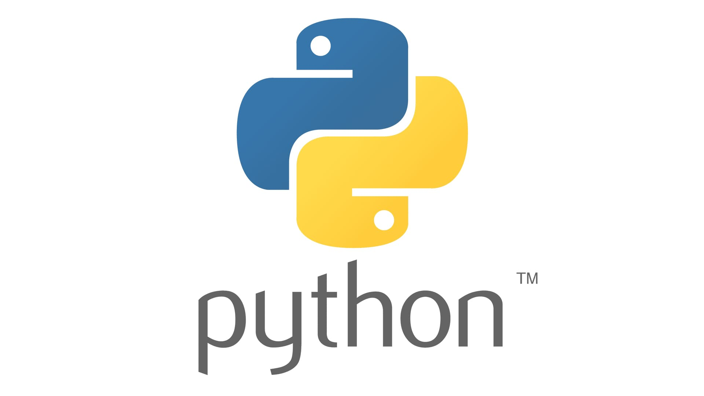

Sou o Professor Ajax, leciono programação de computadores usando as liguagens abaixo:

PYTHON
A linguagem Python é multiparadigma, o que significa que podemos programar com base em diferentes estilos de programação, como a programação funcional, a procedural e a orientada a objetos. Python é uma linguagem multiplataforma, pois tem versões para diversos sistemas operacionais, entre eles: Windows, Linux e macOS.

O Java é uma linguagem de programação orientada a objetos e é uma das linguagens mais utilizadas pelas empresas na atualidade no desenvolvimento de aplicações WEB e Mobile. O Java foi criado em 1995 na empresa Sun Microsystem por uma equipe chefiada por James Gosling, conhecido como o pai do Java.

O C# é uma linguagem de programação orientada a objetos e orientada a componentes. O c# fornece construções de linguagem para dar suporte direto a esses conceitos, tornando o C# uma linguagem natural para criar e usar componentes de software.